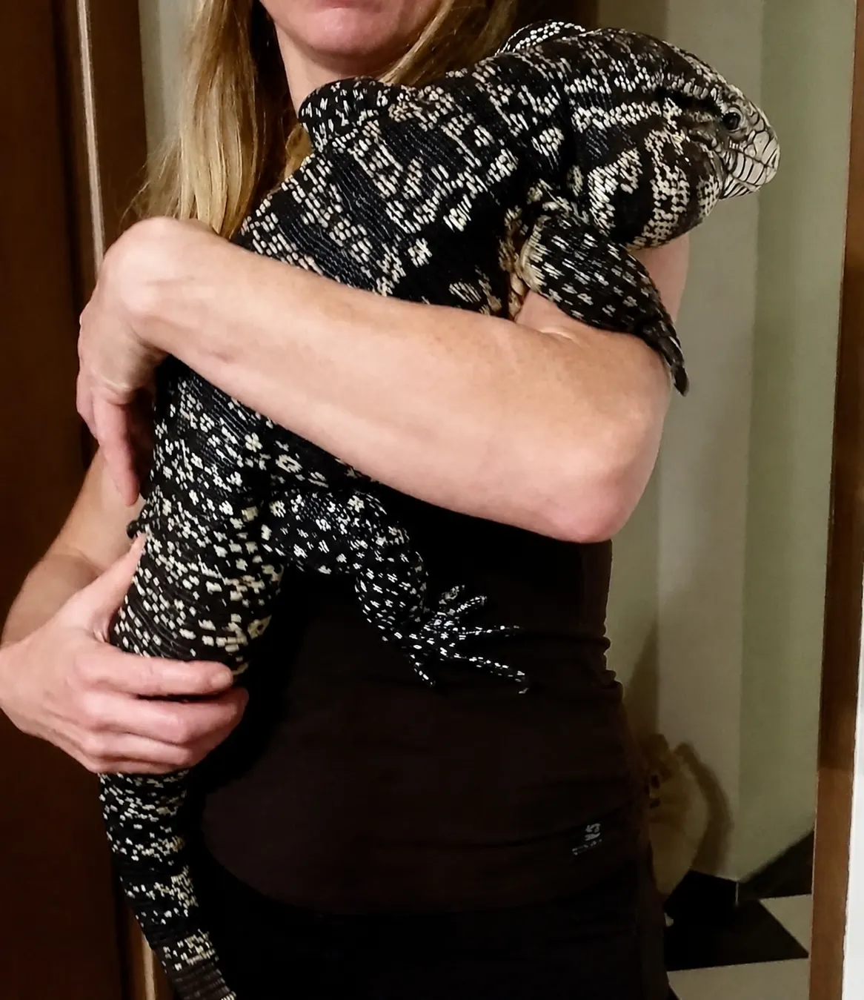
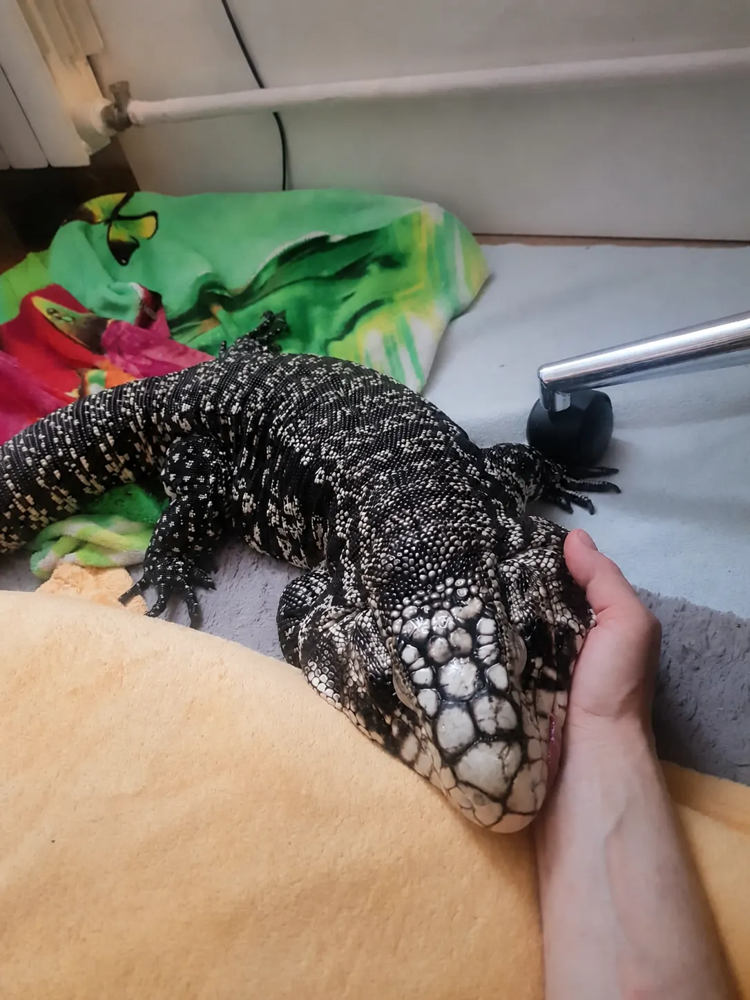
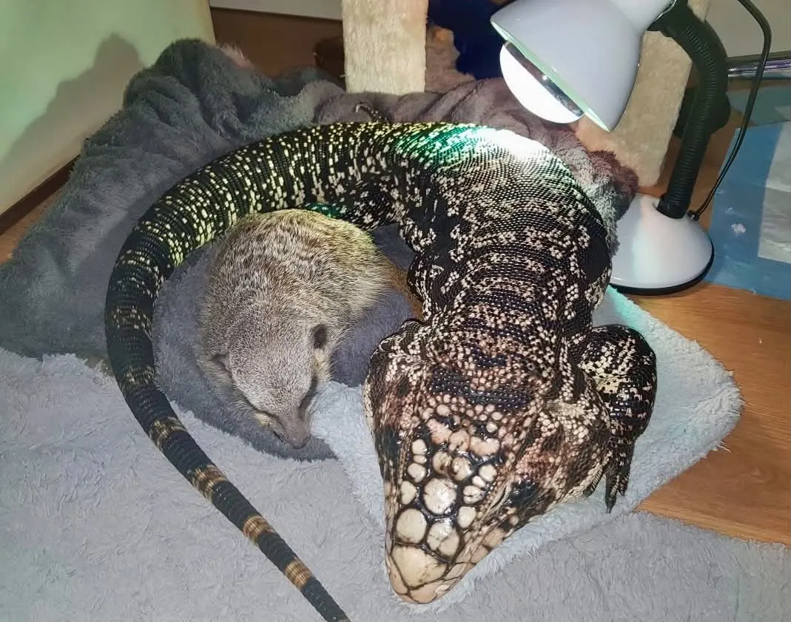
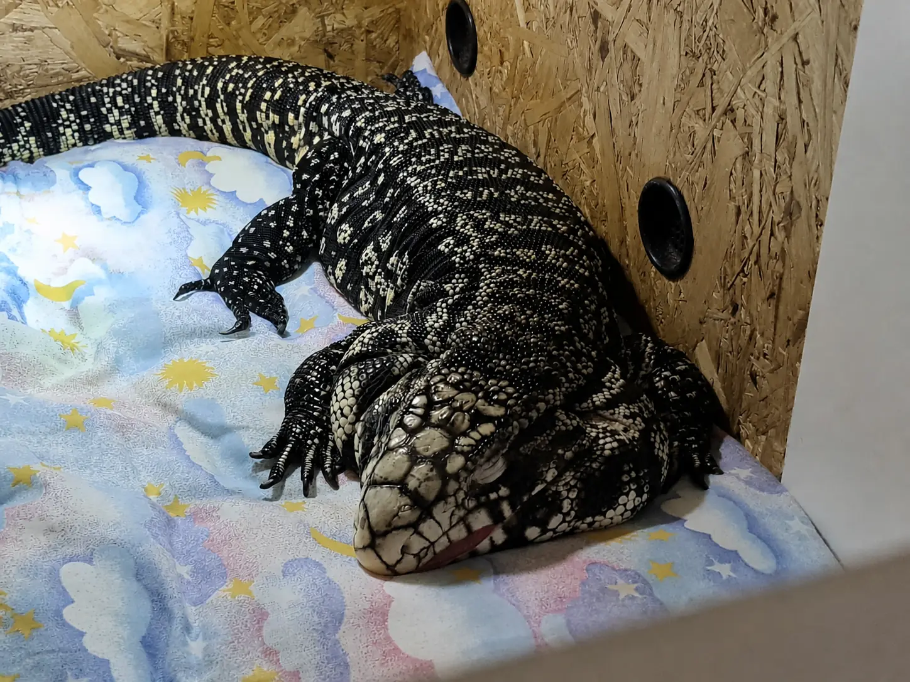
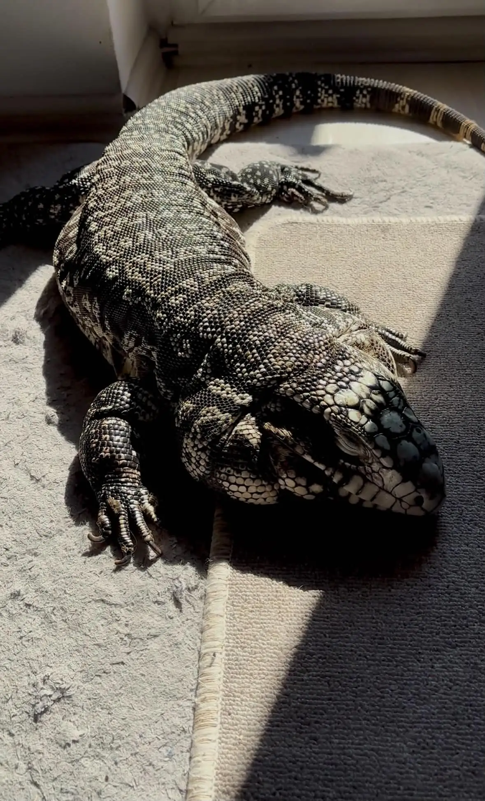
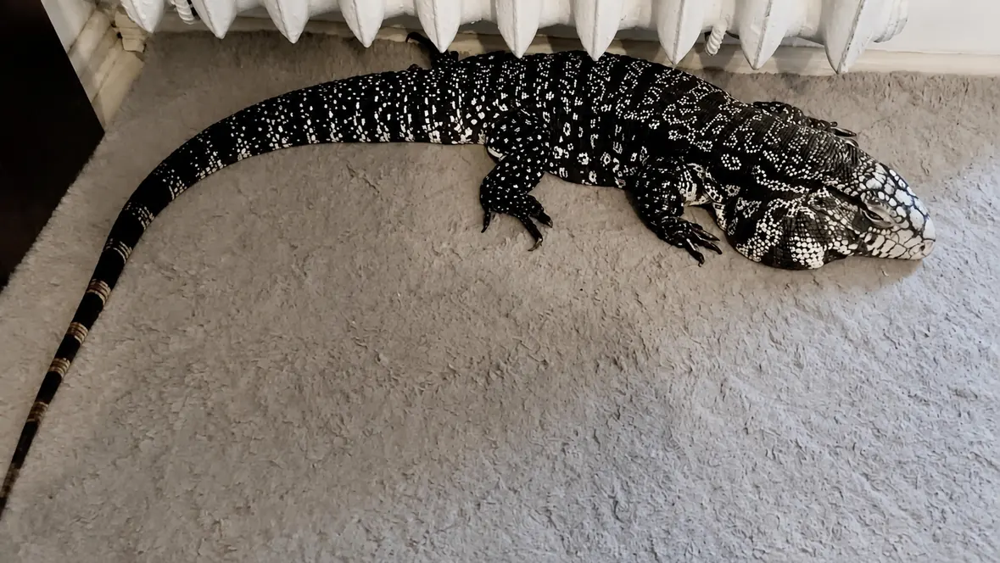
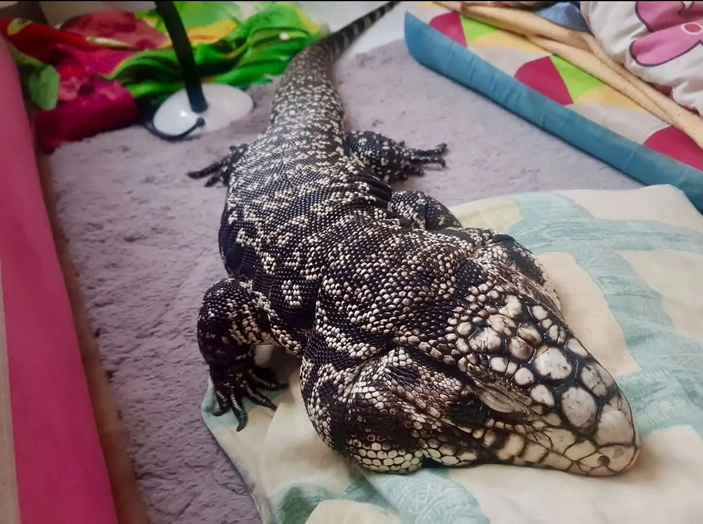
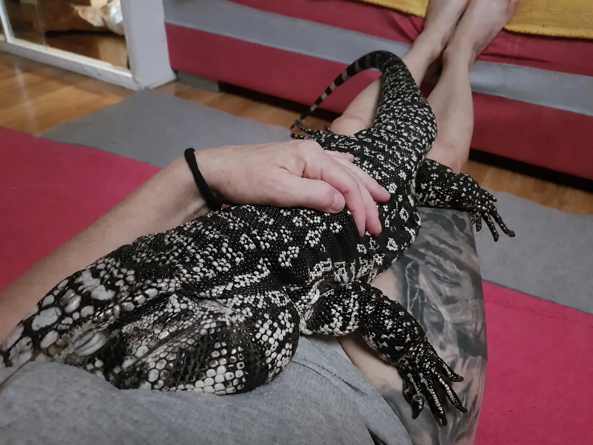

Najpierw słychać szybę
Drago ma swój sposób na zakomunikowanie, że pora otworzyć terrarium: podchodzi do szyby i zaczyna w nią uderzać. U nas wiąże się to często z bardzo konkretną sprawą. Nie załatwia się w środku — czeka na wyjście. To jeden z tych nawyków, które najlepiej poznaje się po miesiącach wspólnej codzienności, a nie po obejrzeniu filmiku z oswojoną jaszczurką.
Jest dorosłym samcem teju argentyńskiego. Wychodzi codziennie, pozwala się wziąć na ręce i przenieść, a sprzątanie terrarium nie kończy się u nas walką o dostęp do jego mieszkania. Nigdy nie ugryzł domownika ani nie zachowywał się wobec nas agresywnie. Piszę to o Drago, nie o każdym teju. Spokojna historia jednego zwierzęcia nie jest gwarancją na przyszłość.
Z czasem odkrył też, jak przesunąć szybę i wyjść samemu. Musiałem zabezpieczyć terrarium. Dla mnie to właśnie takie drobiazgi pokazują jego zdolność uczenia się: zapamiętuje, co działa, i korzysta z tego następnym razem. Gdy raz znajdzie rozwiązanie, lepiej pamiętać o nim przy kolejnym zamykaniu terrarium.
- Imię
- Drago
- Gatunek
- Salvator merianae
- Płeć i etap życia
- Dorosły samiec
Podobne drapanie przy wyjściu przed oddaniem kału opisano także w starszym poradniku The Herpetological Society of Ireland. To zbieżność obserwacji opiekunów, nie dowód, że każdy teju nauczy się korzystać z domowej „toalety”. Uporczywe napieranie na szybę trzeba również ocenić pod kątem warunków i możliwości schronienia. [3]
Historie o Drago pochodzą od jego właściciela. Opis gatunku i zalecenia poniżej opierają się na wskazanych źródłach. Nie znamy dokładnego modelu jego lampy, wyników pomiarów ani pełnego jadłospisu, więc nie przedstawiamy opisu domu jako audytu prawidłowej opieki.


Teju argentyński nie mieszka tylko w Argentynie
Salvator merianae, czyli teju argentyński czarno-biały, występuje również w Brazylii, Paragwaju i wschodnim Urugwaju. Zasiedla między innymi sawanny, polany i przekształcone obrzeża siedlisk. To przede wszystkim jaszczurka naziemna, dobrze kopiąca i sprawnie pływająca. Duże osobniki mogą zbliżać się do półtora metra długości z ogonem, a życie pod opieką człowieka może trwać około dwóch dekad. To zobowiązanie na lata. [1]
Teju należy do rodziny tejowatych, nie do waranów. W starszych publikacjach spotkacie nazwę Tupinambis merianae. Dzienna aktywność i poszukiwanie pokarmu na ziemi pomagają zrozumieć, dlaczego potrzebuje przestrzeni, światła i zajęcia, a nie tylko ciepłego miejsca, w którym może leżeć. [2]
Rozbudowane policzki dojrzałego samca nadają głowie charakterystyczną masywność. Samce zwykle mają je wyraźniejsze od samic. [8]

Jaszczurka, która potrafi wytwarzać dodatkowe ciepło
Jedna z najciekawszych prac o teju dotyczy sezonowej endotermii. Tattersall i współautorzy wykazali, że w okresie rozrodczym badane teju potrafiły utrzymywać nocą temperaturę ciała nawet około 10°C wyższą od otoczenia, dzięki zwiększonej produkcji ciepła i ograniczeniu jego utraty. Nie oznacza to stałocieplności takiej jak u ssaków ani zbędności ogrzewania w terrarium. To szczególna zdolność związana z sezonem rozrodczym. [4]
W chłodniejszej części roku teju mogą wycofywać się do nor i ograniczać aktywność — to brumacja. Nie wolno jednak uznać każdej apatii czy utraty apetytu za „zimowanie”. Planowe chłodzenie wymaga przygotowania i oceny zdrowia; kalendarza obserwowanego na Florydzie nie przenosi się automatycznie do mieszkania w Polsce. [1]
Łagodny wobec nas. Niebezpieczny dla Tofika
W naszym domu są również surykatka Tofik, kot dachowiec i pies rasy pomeranian. Gdy Drago był mały, akceptował ich obecność. Dziś wygląda to inaczej. Jako dorosły samiec podejmował próby polowania na surykatkę, które wiązałem z głodem. Zdarzało mu się także zainteresować kotem.
To ważniejsza część tej historii niż zdjęcie spokojnie leżących obok siebie zwierząt. Tolerancja może się zmieniać wraz z wiekiem i sytuacją. Oswojenie z człowiekiem nie usuwa zachowań łowieckich.
Przy zaobserwowanych próbach polowania właściwym zabezpieczeniem jest fizyczne oddzielenie zwierząt. Osobne, zamknięte pomieszczenia na czas wyjścia Drago, bez dostępu surykatki, kota i psa. Sam nadzór oraz nakarmienie teju wcześniej nie dają wystarczającej ochrony. Nie warto sprawdzać ponownie, „czy tym razem będzie spokojnie”.
Ta rekomendacja wynika bezpośrednio z zachowania opisanego w naszym domu i biologii oportunistycznego drapieżnika. Teju zjadają między innymi małe kręgowce; nie ma podstaw, by zakładać, że domowy towarzysz zawsze pozostanie poza ich zainteresowaniem. [1]

Terrarium dla teju: nie tylko miejsce do spania
Codzienne wyjścia są częścią życia Drago. Nie zastępują jednak dobrze urządzonego terrarium. Podłoga w pokoju nie zapewnia automatycznie właściwej temperatury, wilgotności i UVB. Zwierzę musi mieć możliwość swobodnego obrócenia się, przemieszczania między strefami i całkowitego schowania.
Wymiary podawane w poradnikach różnią się. ReptiFiles proponuje dla dorosłego samca S. merianae około 3 × 1,5 × 1,5 m — długość, szerokość i wysokość — oraz więcej przestrzeni, jeśli to możliwe. To rozsądny punkt wyjścia do planowania dużego wybiegu wewnętrznego, nie rozmiar ustalony eksperymentalnie jako idealny dla każdego osobnika. Trzeba uwzględnić faktyczną wielkość zwierzęcia, podłoże i bezpieczny montaż lamp. [5]
- Miejsce do kopania. Głęboka warstwa bezpiecznego, zatrzymującego wilgoć podłoża. LafeberVet opisuje warstwę sięgającą około 60 cm; może to być także odpowiednio duży, głęboki pojemnik. Cienka mata nie zastępuje możliwości zagrzebania się. [8]
- Kryjówki i brodzik. Schronienia w różnych częściach gradientu oraz płytki zbiornik, do którego teju zmieści się całym ciałem i z którego łatwo wyjdzie. [8]
- Solidne wyposażenie. Ciężkie elementy zabezpieczone przed podkopaniem, lampy i przewody poza zasięgiem zwierzęcia. Ogrzewanie powinno mieć odpowiednie sterowanie i zabezpieczenia; teju potrafi przestawić więcej, niż sugeruje spokojna poza na zdjęciu. [3]
Historia z samodzielnym otwarciem szyby podpowiada jeszcze jedną rzecz: zamknięcie trzeba sprawdzać z perspektywy zwierzęcia, które pcha, podważa i wraca do skutecznego sposobu. U Drago samo domknięcie drzwi okazało się niewystarczające.

Temperatura i wilgotność: gdzie mierzymy?
„Pod lampą jest 50 stopni” mówi niewiele, dopóki nie wiadomo, czy chodzi o rozgrzaną powierzchnię, czy powietrze. Nie wolno ogrzewać całego terrarium do temperatury powierzchni wygrzewania. Poniżej jeden spójny zestaw zaleceń ReptiFiles dla aktywnych teju, a nie instrukcja brumacji ani pomiary wykonane u Drago. [6]
| Co mierzymy | Zalecenie | Jak kontrolować |
|---|---|---|
| Powierzchnia wygrzewania | 52–57°C | Pirometr skierowany na powierzchnię, nie termometr powietrza. |
| Powietrze — ciepła strefa | 32–35°C | Sonda na wysokości, na której przebywa teju. |
| Powietrze — chłodna strefa | 24–29°C | Osobna sonda po przeciwnej stronie. |
| Powietrze w nocy | 20–23°C | Kontrola nocnego minimum; światła wyłączone. |
| Wilgotność względna | 70–80% | Higrometry w różnych strefach; nie pomiar wyłącznie tuż po zraszaniu. |
| UV Index przy wygrzewaniu | UVI około 3–4 | Miernik UVI na wysokości grzbietu; dalej cień i kryjówki. |
Strefa grzewcza powinna obejmować ciało dużej jaszczurki, nie jeden mały punkt. Często potrzebny jest zestaw lamp. Wilgotne podłoże ma zatrzymywać wodę, ale nie zmieniać się w błoto; wentylacja pozostaje konieczna. [6]
LafeberVet podaje 35–38°C dla „miejsca wygrzewania”, bez wyraźnego rozdzielenia powierzchni i powietrza, oraz minimum 24°C nocą. To inny schemat, nie równoważny zapis tabeli. Szczególnie u chorego zwierzęcia zmian nie wprowadzamy skokowo bez konsultacji. [8]
Słońce przy balkonie i lampa w terrarium
Drago lubi leżeć w słońcu przy balkonie. Trzeba jednak odróżnić ciepły promień na podłodze od odpowiedniej ekspozycji na UVB. Zwykła szyba okienna zatrzymuje zdecydowaną większość UVB. Wygrzewanie za zamkniętym szkłem nie zastępuje właściwego oświetlenia terrarium. [11]
Światło widzialne, promieniowanie UVB i ciepło spełniają różne zadania. Napis „imitacja słońca” nie pozwala ocenić, czy konkretna lampa dostarcza potrzebnego UVB. Liczą się jej typ, oprawa, odległość od grzbietu, przeszkody po drodze oraz pomiar. Sam procent na opakowaniu nie jest dawką otrzymywaną przez jaszczurkę. Podejście opisane w pracy Baines i współautorów polega na zapewnieniu odpowiedniego gradientu UV, z możliwością wycofania się z ekspozycji. [7]
W okresie aktywności ReptiFiles zaleca dzień świetlny trwający około 12–14 godzin i ciemność nocą. [6] Barwa światła na zdjęciu nie pozwala ocenić skuteczności lampy Drago. Potrzebne są dane urządzenia i pomiary — nie jedna odległość w centymetrach pasująca do wszystkich modeli.

Co je Drago, a co powinno znaleźć się w planie żywienia teju?
Myszy i szczury dla Drago pochodzą z mojej własnej hodowli karmowej. Mam dzięki temu bezpośredni wpływ na ich żywienie, utrzymanie i przygotowanie. Drago przyjmuje świeżo uśmierconą karmówkę; chętnie zjada też jaja przepiórcze i inne jaja. To opis jego upodobań, nie gotowa receptura kompletnej diety.
Jakość żywienia karmówki naprawdę ma znaczenie. MSD Veterinary Manual wskazuje, że skład odżywczy ofiary zależy od tego, czym sama była żywiona. Cały gryzoń dostarcza również kości i narządów; filet czy mięso mielone bez kości nie są jego równoważnym zamiennikiem. Zwłaszcza bilans wapnia i fosforu może wyglądać zupełnie inaczej. [10]
Teju argentyński jest wszystkożerny. W praktyce opieki uwzględnia się różnorodne pokarmy zwierzęce i roślinne: odpowiednio dobraną karmówkę, owady, a także warzywa i owoce. Wildwood Veterinary Hospital podkreśla różnorodność oraz ryzyko otyłości. Jaja mogą urozmaicać menu, lecz same nie stanowią kompletnego posiłku na każdy dzień. Plan zależy od wieku, kondycji, aktywności i udziału poszczególnych składników. [12]
Ważne jest też, co rozumiemy przez „padlinę”. Teju wykorzystują martwe zwierzęta w naturze, ale w hodowli nie jest to zalecenie podawania zepsutego mięsa. Świeżo przygotowana martwa karmówka lub prawidłowo przechowywana i rozmrożona ofiara to nie to samo co pokarm niewiadomego pochodzenia i świeżości. [2][10]
Nie trzeba używać żywych gryzoni, aby odtwarzać „naturalne polowanie”. Mogą poważnie pogryźć jaszczurkę. Pokarm rozmraża się higienicznie, oddzielnie od żywności dla ludzi; samo mrożenie nie sterylizuje karmówki. [10][14]
Pęseta pomaga, ale nie wyłącza emocji przy jedzeniu
Karmię Drago z pęsety, ponieważ lubi potrząsać ofiarą i nią rzucać. W ten sposób łatwiej mi podać pokarm. Długie szczypce pozwalają też odsunąć palce od pyska. Nie służą jednak do przeciągania się z jaszczurką — po uchwyceniu jedzenia trzeba je zwolnić. Pokarm nie powinien być podawany bezpośrednio z dłoni. [14]
Przed karmieniem obserwuję u Drago chodzenie z uniesioną głową i szeroko otwartym pyskiem. Odczytuję to jako oczekiwanie na jedzenie. Czy jest to uniwersalny „sygnał głodu” u teju? Nie. To moja interpretacja sytuacji, którą znam z codziennej opieki.
Otwartego pyska nie wolno automatycznie tłumaczyć apetytem. Długotrwałe oddychanie przez otwarty pysk, wysiłek oddechowy, wydzielina albo wyciąganie szyi w spoczynku wymagają pilnej konsultacji z lekarzem od gadów. Kontrola temperatury jest ważna, ale nie zastępuje badania przy problemach z oddychaniem. [13]
Czy przy dobrej karmówce teju potrzebuje witamin?
Drago nie dostaje ode mnie preparatów witaminowych. Opieram jego żywienie na własnej karmówce i przykładam wagę do jej jakości. Nie chcę jednak, żeby ktoś przeczytał to jako radę: „mam dobre myszy, więc wapń, witaminy i UVB mnie nie dotyczą”. Taki wniosek wykraczałby poza to, co wiadomo o jego diecie.
Poradniki nie przedstawiają jednego schematu. Hodowla Dynasty Reptiles rozróżnia dorosłe teju jedzące głównie całe gryzonie od zwierząt otrzymujących mięso bez kości; w tym drugim przypadku wskazuje na potrzebę uzupełnienia wapnia. LafeberVet proponuje natomiast regularny wapń bez D3 i preparat wielowitaminowy. Tych zaleceń nie należy mieszać ani sumować dawek z kilku stron. [9][8]
Wapń jest składnikiem mineralnym, a nie witaminą. D3 uczestniczy w gospodarce wapniowej; znaczenie mają zarówno jej podaż, jak i właściwe UVB. Preparat „wapń z D3” nie jest zamienny z czystym wapniem. W przypadku suplementów więcej nie zawsze znaczy lepiej — nadmierna podaż także może szkodzić. [11]
Praktyczny krok to spisanie jadłospisu z ilościami i częstotliwością, sprawdzenie udziału całych ofiar oraz przedstawienie lekarzowi danych o UVB, wieku i kondycji zwierzęcia. Dopiero na tej podstawie można ocenić, czy i co uzupełniać. Nie każdą całą mysz trzeba automatycznie obtaczać w preparacie, ale nie da się też potwierdzić zbędności wszystkich dodatków samym zapewnieniem o wysokiej jakości karmówki. [10][11]
Brodzik, wylinka i człowiek, którego zna
Drago chętnie leży w wodzie, szczególnie w okresie wylinki. Dlatego dostęp do brodzika ma dla niego realną wartość. Zbiornik musi być stabilny, łatwy do umycia, z bezpiecznym wejściem i wyjściem. Woda nie może czekać na wymianę po zabrudzeniu. Kąpiel jest dodatkiem, nie sposobem na naprawianie stale niewłaściwej wilgotności. [12]
Przy nas pozwala się przenosić i spokojnie towarzyszy domownikom. Podczas urlopu, kiedy zajmują się nim inni ludzie, potrafi w ogóle nie wychodzić z terrarium. Nie wiemy, czy chodzi o nieznane osoby, zmienioną rutynę, czy kilka rzeczy naraz. Nie ma potrzeby dorabiać do tego historii o obrażaniu się.
Opiekun zastępczy powinien znać sposób zabezpieczenia szyby, zwykły rytm Drago, zasady karmienia i całkowitego oddzielenia od innych zwierząt. Potrzebuje też kontaktu do lekarza. Nie musi za wszelką cenę odtwarzać naszych wspólnych chwil poza terrarium; ma przede wszystkim zapewnić bezpieczeństwo, obserwację i właściwe warunki.
Domowe zdjęcia pokazują bliski kontakt. Nie znoszą jednak zasad higieny: po kontakcie z gadem, karmówką i wyposażeniem myjemy ręce, a zwierzę nie ma dostępu do kuchni i miejsc przygotowywania jedzenia. CDC odradza swobodne wędrówki gadów po części mieszkalnej ze względu na wypadki i zanieczyszczenie otoczenia; bezpieczniejsza jest wydzielona, nadzorowana przestrzeń, którą można umyć. [14]



Wszystkie 10 zdjęć udostępnił właściciel Drago. Wybrane ujęcia przeszły korektę koloru i ekspozycji wspomaganą AI; oryginały zachowano. Zdjęcia służą opowieści o zwierzęciu, nie ocenie zdrowia czy dokumentowaniu skuteczności wyposażenia.
Krótko o teju w domu
Czy oswojony teju może ugryźć?
Tak. Drago dotąd nie ugryzł domowników, lecz to nie wyklucza ugryzienia przy strachu, bólu albo karmieniu. Oswojenie nie daje całkowitej przewidywalności.
Czy Drago może bezpiecznie przebywać z Tofikiem po karmieniu?
Nie należy tego zakładać. Ponieważ były próby polowania, rekomendacją jest fizyczne oddzielenie — także wtedy, gdy Drago niedawno jadł.
Czy cały pokój może zastąpić terrarium?
Zwykły pokój nie zapewnia kontrolowanych stref ciepła, UVB, wilgotności i schronienia. Wyjścia nie zastępują odpowiednio urządzonego miejsca stałego utrzymania.
Czy opisane liczby dotyczą terrarium Drago?
Nie. To oznaczone źródłami zalecenia. Nie otrzymaliśmy wyników pomiarów ani szczegółów urządzeń używanych u Drago.
Wniosek: smok z własnymi przyzwyczajeniami
Drago jest fascynujący właśnie w codziennych sytuacjach: kiedy upomina się o wyjście, znajduje sposób na szybę albo pozostaje w terrarium przy nieznanym opiekunie. Dla nas jest łagodnym domownikiem. Pozostaje jednak dużą jaszczurką z siłą, potrzebami środowiskowymi i zachowaniami łowieckimi, których nie wolno ignorować.
Jeśli ktoś po tej historii myśli o teju w domu, zacząłbym od miejsca na duże terrarium, możliwości oddzielania zwierząt, kosztów ogrzewania i dostępu do lekarza od gadów. Dopiero później od wyboru imienia. Drago brzmi świetnie — ale samo imię smoka jeszcze nie urządzi mu odpowiedniego świata.
Źródła i praktyka, na których oparto tekst
Materiały doświadczonych opiekunów i hodowców porównano z opracowaniami weterynaryjnymi i badaniami. Starszy poradnik posłużył do opisania ciekawego zachowania; aktualne zalecenia środowiskowe sprawdzono osobno.
- Florida Fish and Wildlife Conservation Commission — Argentine Black and White Tegu. Zasięg, siedliska, wszystkożerność, rozmiary i sezonowa aktywność.
- ReptiFiles — Tegu Care Guide. Biologia, nazewnictwo i ogólne ramy opieki; źródło praktyczne, nie badanie kliniczne.
- The Herpetological Society of Ireland — Tegu Care (2014). Relacja opiekuna o zachowaniu przy wyjściu i trwałości wyposażenia. Starsze zalecenia nie zostały przyjęte w całości.
- Tattersall i wsp. (2016), Seasonal reproductive endothermy in tegu lizards, Science Advances. Badanie fizjologiczne; DOI: 10.1126/sciadv.1500951.
- ReptiFiles — Tegu Enclosure Size Guidelines. Propozycje wymiarów dla dorosłych osobników, z odniesieniem do standardów organizacji herpetologicznych.
- ReptiFiles — Humidity, Lighting & Heating Requirements. Źródło tabeli temperatur, wilgotności i docelowego UVI; zalecenia hodowlane, nie pomiary Drago.
- Baines i wsp. (2016), How much UVB does my reptile need? The UV-Tool, Journal of Zoo and Aquarium Research. Dobór ekspozycji i gradientu UV; DOI: 10.19227/jzar.v4i1.150.
- LafeberVet — Tegu Basic Care (PDF, 2024). Opieka, podłoże, kryjówki, pokarm i suplementacja. Rozbieżności temperatur zaznaczono w tekście.
- Dynasty Reptiles — Tegu Care Sheet. Opublikowany schemat hodowli; rozróżnienie całych gryzoni i pokarmów bez kości. Nie przenosimy automatycznie podanych tam dawek suplementów na Drago.
- MSD Veterinary Manual — Nutrition in Reptiles (aktualizacja 2025). Wartość odżywcza karmówki, wapń, sposób przechowywania i ograniczenia wiedzy żywieniowej.
- Merck Veterinary Manual — Providing a Home for a Reptile. UVB, szkło i ostrożność przy suplementacji wapnia oraz witaminy D3.
- Wildwood Veterinary Hospital — Tegu Care. Różnorodność żywienia, kondycja i woda. Nie przyjęto całego poradnika jako jednego standardu hodowli.
- Texas Avian & Exotic Hospital — Open-Mouth Breathing in Reptiles (2026). Objawy wymagające pilnej oceny weterynaryjnej; nie diagnoza Drago.
- CDC — Reptiles and Amphibians (2026). Higiena, karmówka, bezpieczny kontakt i ograniczanie zanieczyszczenia domu.
Materiały sprawdzono 30 sierpnia 2026. Poradnik edukacyjny nie zastępuje indywidualnej oceny zdrowia i warunków utrzymania.